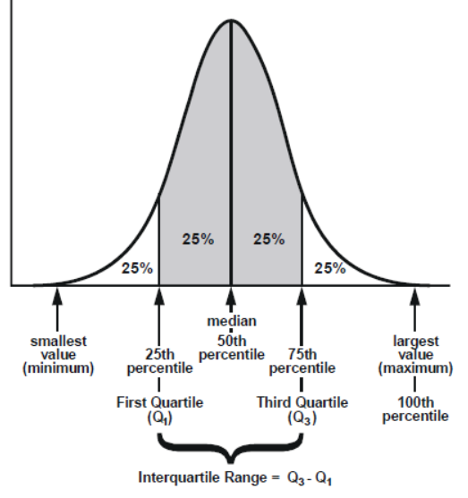

EDA(Exploratory Data Analysis) 탐색적 분석#
데이터를 정제하고 변수를 처리했으면 인쟈 데이터 탐색을 할 차례다. 데이터를 제대로 분석하기 전에 그래프나 통계적인 방법으로 자료를 직관적으로 바라보는 과정이라고 할 수 있다.
의의#
데이터가 표현하는 현상 이해
데이터의 잠재적인 문제 발견
데이터 수집할지 말지를 결정하게 됨
문제 정의 단계에서 미쳐 발생하지 못했을 다양한 패턴 발견
기존의 가설을 수정, 새로운 가설을 세우게 됨
필요 지식#
개별 데이터를 관찰함에 있어서, 앞뒤의 데이터 만을 보고서는 이상패턴에 대한 관찰을 할 수 없음 \(\to\)
sampling 기법을 통해서 표본 추출.시각화 이후에 이에 대한 의미를 통계적으로 찾기 위해
확률분포에 대한 이해 필요
기초 통계 지식#
대표값 Representative Value#
주어진 자료를 특정 값으로 대표하기. 컬럼들간의 비교를 할 시에 사용될 수 있다.
평균 mean
산술평균 numerical mean
\((x_1 + x_2 + ... + x_n) / n\)
\(\sum_{i=1}^n x_n \div n \)
np.mean(x)
기하평균 geometric mean
\(\sqrt[n]{\sum x_n}\)
np.exp(np.mean(np.log(x)))
np.prod(data) ** (1 / len(data))
조화평균 harmonic mean
something
가중평균
각 자료값이 가지는 중요성이 다른 경우
상대적 중요도 (w)
중위값 median
numpy.median(a(array_like), axis=None, …) \(\to\) array_like
torch.median(input, dim=-1,keepdim=False,*,out=None) \(\to\) Tensor
torch.quantile(input,q=0.5,dim=None,keepdim=False,*,interpolation=‘linear’,out=None) \(\to\) Tensor
최빈값 mode
최대 빈도로 등장하는 값
np.mode
torch.mode
극단값이 1개 있을떄
이런 경우 산술평균으로 하면 해당 outlier로부터 매우 큰 영향을 받을 수 밖에 없다. 그런 경우에는 mean보단 median,mode가 더 representative value로 적합해질 수 있다.
분포 Distribution#
대표값 만으로는 데이터가 어떤 모양을 이루는지 알 수 없다. 대표값은 점 이기 때문에. 이를 위해서 분위수 max min 분산 편차 등의 방식으로 흩어진 정도를 파악한다.
1. 분위수 fractile#
n개의 데이터를 작은 수에서 부터 큰 수의 순으로 놓고 몇 등분을 하기. 경계 부분의 수치를 분위수라고 한다.

1 \(\to\) 4로 갈수록 커지게됨
사분위수의 범위 IQR(Interquartile Range) : \(IQR = Q_3 - Q_1 = 50\%\)
q2 = median
count는 분위수 모두 같다.
2. 편차 deviation \(\sigma\)#
데이터 값과 평균값의 차이
편차는 개별 데이터에 대하여 계산된다.
$\(
\sigma_i = x_i - \mu
\)$
3. 분산 variance#
편차를 하나의 지표로 데이터의 특성(얼마나 흩어져 있는가)에 대한 표현
4. 이상치 outlier#
평균에서 멀리 떨어져 있는 값으로 대표값을 설정할때 영향을 준다. 평균에 큰 영향을 주는 요소이다.
5. 변동계수 Coefficient of Variation#
두 개의 데이터가 흩어진 정도를 비교하는 경우
측정 단위가 다른 자료를 비교할 때 사용
표준편차를 표본평균이나 모평균 등 산술평균으로 나눈 것\
확률과 확률 분포 Probability Distribution#
1. 확률 Probability \(P(A)\)#
결과는 우연히 정해지지만 결과를 예측 또는 기대를 할 수는 있다. 동일한 조건에서 동일한 실험을 무수히 반복하여 실시할 때, 어떤 특정한 사건이 발생하는 비율을 확률 이라고 말한다.
1-1. 공리적 정의#
Definition-of-Probability 이것은 엄밀한 확률에 대한 정의이다. 대충 정리하면 표본공간의 모든 확률은 항상 1이어야하고, 각 사건의 확률은 0에서 1사이어야하고, 각 사건이 배반이면 합사건의 확률은 각 확률을 더한 것과 같다.
Theorem 1 (Definition-of-Probability)
Givne 표본공간(\(\Omega\))의 모든 사건들의 집합 F위에서 정의된 함수 P가 다음 3가지를 만족할 때,
\((\Omega, F, P) = 확률공간\)
TO P를 확률측도(probability measure)라고 한다.
모든 \(A \in F\)에 대해 0<=P(A)<=1<=1
\(P(\Omega) = 1\)
표본공간의 모든 사건이 서로 배반이면, \(P(A_1 \cup A_2 ... \cup A_n = P(A_1) + P(A_2) + ... + P(A_n)\)
2. 확률 변수 Random Variable#
실험 : 동전을 무작위로 던져서 앞 뒤 확인
확률 : 앞 1/2 뒤 1/2
결과 tagging : 앞 1 뒤 0
여기서 결과 tagging, 실수값을 부여하는 것을 변수라고 한다. 사건 X(실험의 결과, 앞or뒤)에 수치를 부여해서 수학적인 개념으로 넘긴 것이다.
이산확률변수(discrete random variable)는 int label처럼 값이 분리된 것이고, 연속확률변수(continuous random variable)는 금액, 물의 양 과 같이 연속적인 것이다.
연속이냐 이산이냐
그렇다면 시간은 이산확률변수일까 아니면 연속활률변수일까? 1초 2초 처럼 셀 수 있는 것으로 붸긴하지만 실제로는 딱 떨어지지 않는다.
특히 가장 큰 이산확률변수와 연속확률변수의 차이는 확률을 P(X=x)로 표기할 수 있는가 없는가 이다. 물을 변수라고 한다면 정확한 100ml를 따르는 확률 P(X=100ml)는 사실상 0에 가깝기 때문에 이는 연속확률변수라고 보기 힘들게 되는것이다.
정규분포 normal distribution
많이 들어봤을 정규분포는 대표적인 연속확률변수의 확률 분포다.
위에서 이산확률변수와 연속확률변수의 차이 때문에 연속확률변수는 확률분포함수 f(x)를 도입하며, f(x)를 a에서 b까지 적분함으로써 확률변수의 값이 a와 b사이에 있을 확률을 구한다.
3. 확률 분포 Probability Distribution#
event 시행에서 확률변수 random variable이 어떤 값을 가질지에 대한 확률을 나타낸다. 확률변수가 취하는 값들의 집합이 자연수의 부분집합과 일대일 대응한다면 이산확률분포, 실수의 구간을 이루면 연속확률분포
분포 확인 단어 정리
첨도 kurtosis : 분포의 산의 뾰족한 정도, 최대값인 부분에서 급격한 정도.
왜도 skewness : 비대칭도
3-1. 이항분포 Binomial Distribution#
n번의 독립 베르누이 시행(1 event \(\to\) o or x)에서 성공확률이 p일 때의 확률 분포. 만약 충분하게 n의 수가 많아지면, 분포는 좌우대칭의 정규분포에 가까워진다.
3-2. 균일분포 Uniform Distribution#
각 사건이 일어나는 확률이 같은 분포.
여기서 왜 12로 나누냐 분산에서?
3-3. 정규분포#
가우시안 분포라고도 불리는 연속확률분포 중에 가장 유명한 분포이다. \(\mu\) 평균값을 중심으로 대칭을 이루는 종 모양이다. 이항분포의 n 시행 횟수를 늘리면 그 분포는 정규분포와 가까워진다. Central-limit-theorem(CLT)(중심극한정리)에 의하면 독립적인 확률변수들의 평균은 정규분포에 가까워지는 성질이 있다.
Theorem 2 (Central-limit-theorem(CLT))
Central limit theorem(CLT)
전제 Given \(X_1, X_2, X_3,...X_n\) with 독립항등분포, each \(E(X_i) = \mu\) and \(\sigma\), \(\xi_n = \frac{\sum_{i=1}^n X_i - n\mu}{\sqrt n \sigma}\)라고 둘 때,
결론 \(\xi_n\)은 표준정규분포로 분포수렴한다.
DEF 무작위로 추출된 표본의 크기가 커질수록 표본 평균의 분포는 모집단의 분포 모양과는 관계없이 정규분포에 가까워진다.
표본 추출 Sampling#
층화추출(stratified random sampling)#
모집단을 몇 개의 이질적인 층 stratum으로 구분하여 각 층별로 임의 추출법 적용
동일 층의 이질성으 낮추고 다른 층의 이질성을 높여 각 층내 분산 감소.
할당 표본추출과 차이 : 확률 표본추출을 적용하지 않음